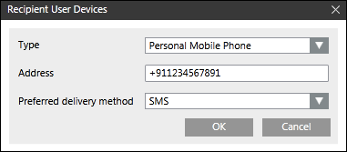

Configure Recipient User Devices
- You have added one or more users as Recipient Users.
- In the Recipient User Devices dialog box, from the Type drop-down list, select Personal Mobile Phone or Work Mobile Phone as a recipient device for the corresponding recipient user.
- In the Address field, enter the mobile number.
NOTE 1: In order to use message reply and escalation functionality, the mobile number configured in the recipient user device must have the following number format:
+[country code][number]. For example, +17327572923.
NOTE 2: The driver ignores all special characters in recipient user telephone numbers, such as (, ), -, /, and so on, except for a leading + sign that indicates an international number format. - From the Preferred Delivery Method drop-down list, select SMS.

- Click OK.
- Associate the recipient with the message template (notification template).
- Associate the notification template with the incident template and initiate incidents.
- Once the incident is initiated, the recipient user in the message template (notification template) receives an SMS message with the content as described in the corresponding message template.
- For message templates with acknowledgment option, the recipient replies are collected by the Notification system.
- The recipients reply as per the configuration details in the Acknowledgment Reply Action field of the Notification Integration section of the GSM Modem driver.
Based on the recipients' replies, the appropriate status (AcknowledgedorNot Acknowledged) displays in the Message Status section of the Browse snap-in.